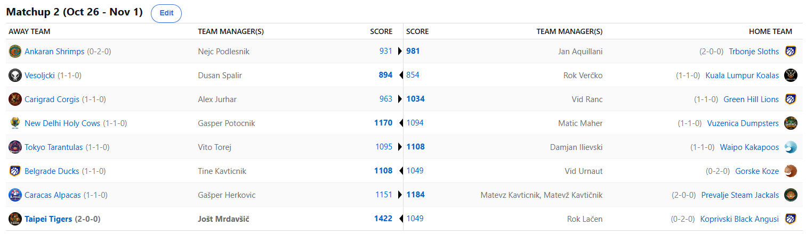
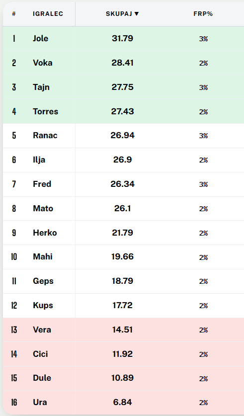
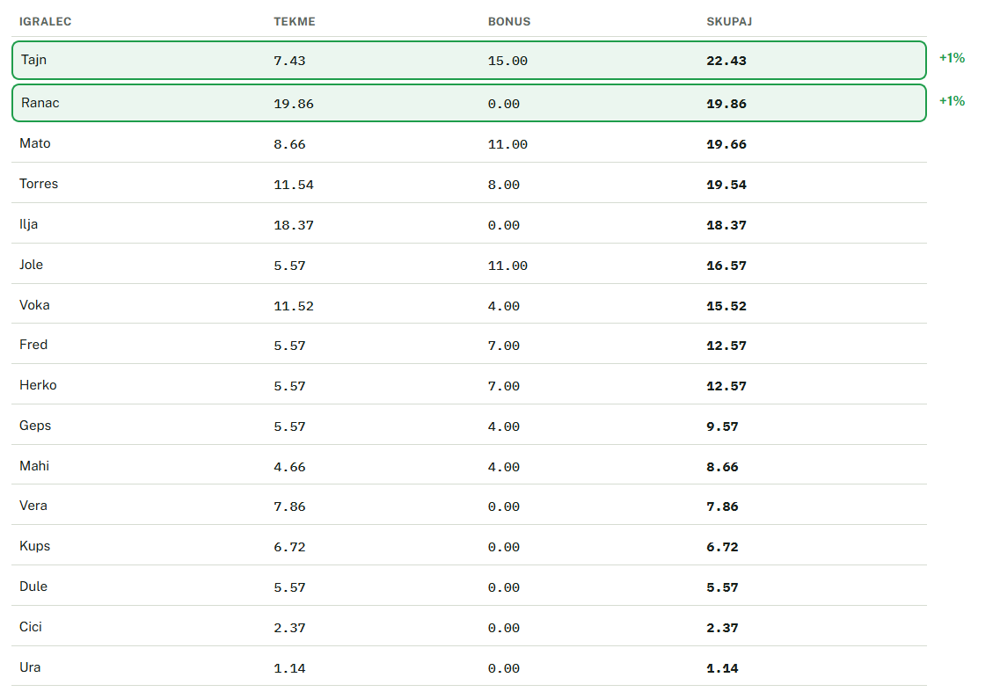
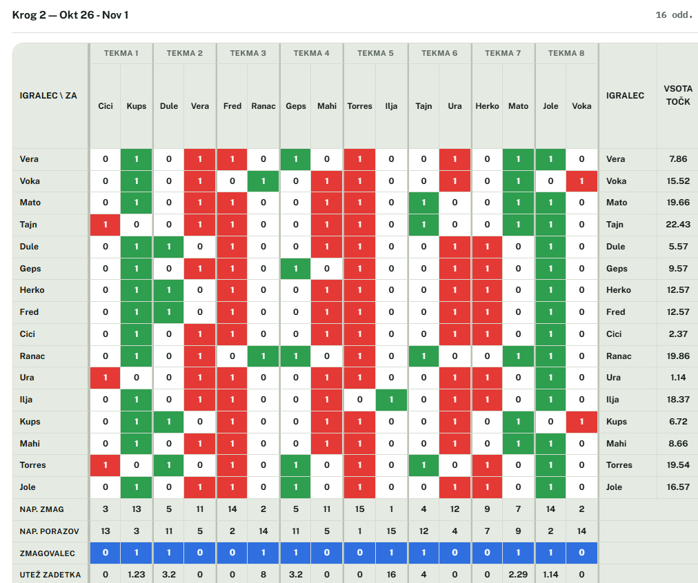
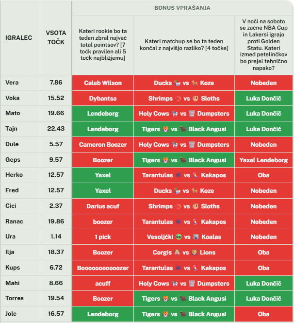

MATCHUP 2

Recap: MATCHUP 2
Deževni, a praznični teden številka 2 smo sklenili z nekaj izjemno napetimi obračuni. Če izvzamemo edini blowout in pogledamo samo
preostalih 7 matchupov, je povprečna razlika ta teden znašala pičlih 48,5 točke! Če bi upoštevali samo polne tedne, je to
šele prvič, da so se 4 matchupi končali z razliko manjšo od 50 točk, o izenačenosti in nepredvidljivosti pa govori tudi dejstvo,
da se je opeklo kar 5 “stavniških favoritov”, ki so prejeli več glasov na predictionih.
Brez nadaljnjega aduja pa gremo kar k prvemu obračunu. Spodobi se, da najprej ponovno malo osramotimo Maherja, kajti preveč je pa preveč. 11-2…..
ENAJST PROTI DVA!!!! Takšen je namreč medsebojni izkupiček v korist Gepsa v njunih medsebojnih obračunih, razlika pa je zdaj že neverjetnih 2953 točk.
Haha. Zmanjkalo nam je pridevnikov, umetna inteligenca pa nam je predlagala, da ta obračun opišemo kot »HEGEMOSTIČNO DOMINACIJO«. Pri Grkih si moramo
sposojati besede, da lahko to sramoto sploh opišemo, lol. Kakorkoli že, tudi tisti nekdo, ki je pojedel Matica in začel podpisovati igralce ter uporabljati IR,
ne uspe najti izhoda iz tega brezna.
Preden se lotimo povzetka najbolj zanimivega obračuna tega tedna, pa si vzemimo trenutek, da čestitamo za uspešno zaključen magisterij Vitu Toreju.
Kapa dol, sam si namreč težko že samo zapomnim smer, ki jo je doštudiral. Čestitke in kakopak, pijemo Laško. No, ampak lajf mu ni namenil triple killa
v tem tednu, saj je na sobotnem izletu v Hrastnik bil boljši sodnik, po izjemnem preobratu v samem zaključku, pa mu je tudi na fantasy področju zmago
odščipnil Ilja. V zadnjih dveh dneh je namreč nadoknadil 100 točk in izkoristil slabo igro Keyonteja ter počitek Curryja za svojo prvo zmago v sezoni.
Po lanskem tretjem mestu ima zagotovo tudi letos visoke cilje in videli bomo, do kam lahko poseže.
S polno paro naprej (hehe) pa drvijo Steam Jackalsi. Tole je ponovno en super uvod v sezono za prvi gobec Balkana, Matevža Kavtičnika. Slednji je začetek
tedna izkoristil za pripravljanje memov in čakal na svojo priložnost, potem pa z njimi pičil na najbolj boleče mesto. Izjemen preobrat mu je uspel, zanj
pa se lahko zahvali predvsem svojemu drugo-najljubšemu Graysonu. Po tej lestvici, kjer normalni nimajo kaj početi, je Allen namreč s 50fptsji poskočil in s tem
tlakoval pot do preobrata. Pomagala sta mu tudi počitka Markkanena in MVP-ja Jeroma. Herko je tako nepričakovano oddal prvo zmago, kar nikakor ni dobra
popotnica pred velikim derbijem s Tigersi.
Slednji namreč meljejo naprej. V 2. krogu so brez pravega odpora padli Koprivski Black Angusi. Očitno so tako navdušeni nad točenim Tuborgom v novem
hotelu, da so na košarko kar nekako pozabili. Da ne omenjamo še blowanja 3-1 leada na četrtkovih rekreacijah, ki je trenutno v teku. Naš Voki je zdaj celo
na predzadnjem mestu in morda ravno zato še ni oddal season-long predictionov, ker ne ve ali bi kar sebe označil za gajbarja? Zmanjkuje pa presežnikov za
Tigerse, ki na krilih izjemnega Dončiča rušijo vse pred seboj. To je zdaj že 14. zaporedna zmaga, s čimer se je Jole izenačil s Cickom za najdaljši winning
streak v zgodovini. Mu bo uspelo ta dosežek ohraniti samo zase, za kar bo moral premagati vsekakor worthy opponenta – Herkovičevega Gapšperja.
Največje presenečenje, vsaj če se oziramo na vrednost pri predictionih, pa je pripravil Ranac. Slednji je izkoristil odsotnosti Halija in JJJ-ja (če kdo
vpraša dveh štrdesetk itak) in prizadejal kebaparjem iz Istanbula prvi poraz. S tem sta si Vid in pa kakopak njegov zvesti oproda in največji believer v
zelenbreške leve, Tajn, priigrala vsak 8 prediction pointsov, kar je v kombinaciji z bonusi zadoščalo za prvi dodaten procent. Je pa najzaslužnejši za to
zmago Lionsov seveda aktualni šampion lige NBAFK, Victor Wembanyama, ki je sam zbral več točk kot 2. in 3. najboljša igralca Levov, Reaves in Netanyahoops, skupaj.
Fred, je že razlog za paniko? My door is always open.
Ko smo ravno pri paniki in odprtih vratih za trejde, nikakor ne moremo mimo Ankaranskih Šrimpov. Izgleda, da tam tulijo že čisto vsi alarmi, kajti Nejc je
že posegel po prvih kadrovskih rošadah. Čas bo pokazal, ali se mu je trejd izplačal, bode pa v oči trejd za še enega poškodovanega igralca, ko imaš na
rosterju že O-jev za otorinolaringologa. Cicko, saj veš, da 2 izpadeta, kajne? Kot navijač Milana je Kups seveda navajen na vrtiljake emocij in nič drugače
ni bilo niti tokrat. Zmaga v Ankaranu pri Shrimpih in pa velika zmaga na Derbiju della Madonnina (ki se, mimogrede, imenuje tako po kipcu na vrhu milanske
katedrale, kjer Madonnina predstavlja devico Marijo po naše) sta vsekakor bila ena izmed vrhuncev tega tedna za Kupsa, ki je tako že pozabil na sramoten
poraz z Bologno sredi tedna. Za razliko od mene, ker mi je namreč prav ta par zjebal vesoljčka. Grrrrrrr.
Kakšna tranzicija iz vesoljčkov na Vesoljčke bo tole, skoraj bolj clean kot tranzicija iz Popa do Hale. Duletovi varovanci so v, roko na srce, izjemno
avspuharskem obračunu, vendarle potegnili daljši konec in zabeležili prvo zmago. Za njo je zadostovalo pičlih 894 točk, medtem ko, za primerjavo, Herko ni
zmagal niti z izjemnih 1151. A tako pač je v tem H2H sistemu. Kot je dejal ravno preminuli Mišo Kovač - »al' brzo su nestali svi ti dani sreće, nikada više,
ja znam, vratit' se neće«. Bomo videli, kako hitro bo nestala in ali se bo, za razliko od Miša, k Duletu tudi vračala! Aja, by the way, Dušan je premagal
Verčkona, kot je tudi Verčko v petek premagal svoje zadržke in iz »matr sm sfukan, domo grem ob 8h«, kot pravi ded, podaljšal druženje.
Ni pa ga podaljšal Urnaut, ki je šel domov kovat strategijo za preostanek matchupa s Tinetom, a kaj ko bi bilo dosti bolje, če bi si še privoščil enega točenega
Stiegla. Tuhtal in gruntal je Vid, a zaman. Še drugi zaporedni poraz je tole in če je prejšnji teden bil pričakovan, je tokrat nekoliko drugače in ali bomo
videli kakšen drastične poseg v kader, ali pa še ima zaupanje v svoje HoustON Rocketse? Zaenkrat so bolj HoustOFF. Ta teden je bil Tinki Binki. Kako nismo
že prej naredili povezave med Tinki Binkijem in Violami. Potrebovali smo story iz derbija v Ljudskem vrtu, da smo si prišli gr, zakaj je Tinki Binki takšne
barve kot je. Lajtnga daljša kot Tinetov MVP, Tristan da Silva. Bravo za zmago Tine, v četrtek boš pa spet spušo.
To je za ta teden to, v tretji krog, kjer bodo oči uprte predvsem v derbije Tigersov z Alpakami in Šakalov s Tarantelami, vstopamo s popolnoma simetrično
ligaško lestvico 3-10-3. Koliko ekip bo ostalo neporaženih in koliko ekip bo ostalo brez zmage po treh krogih? Bomo videli!
Srečno vsem in ne pozabite na predictione. LPLMJM
Predictions
Lestvica

Točke v krogu

Matchups

Bonusi
